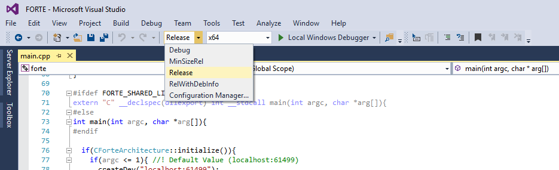
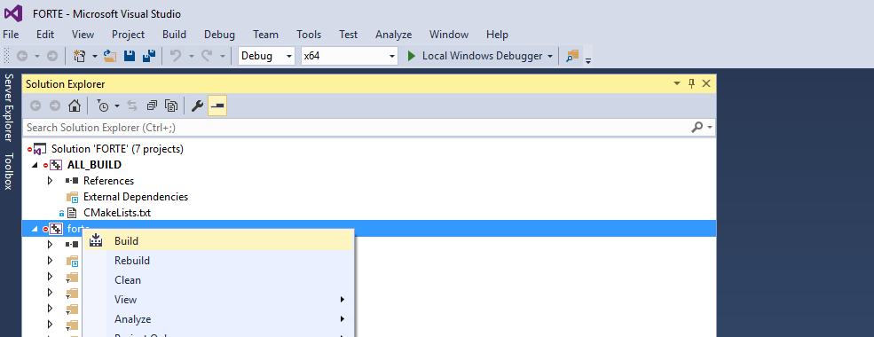
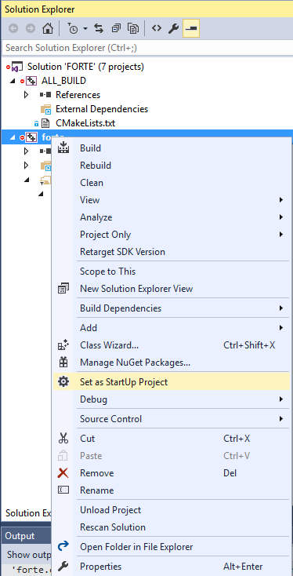

Compiling and Debugging 4diac FORTE with MS Visual Studio
The following describes how to compile 4diac FORTE with win32-architecture using Visual Studio.
In the installation tutorial (back) you find more details on building your own 4diac FORTE.
Additionally, other tools are described there.
Attention: If you are using a Visual Studio version older then 2010 you might need to extend it with a stdint.h file. See for example here.
Building a MS Visual Studio Project for 4diac FORTE with CMake
In the installation tutorial, the steps on building a project with CMake are described in detail.
To use Visual Studio, you need to however select the tool MS Visual Studio.
The correct architecture is Win32.
- Open the CMake-GUI.
- Choose the source folder FORTE_FOLDER_ROOT.
- Choose desired destination folder.
We recommend FORTE_FOLDER_ROOT/bin/win32.
- Press the Configure button and choose the version of Visual Studio that is used and native default compilers.
Press the Finish button afterwards.
- For the option FORTE_ARCHITECTURE, select Win32.
Other modules and configurations options can be set following the tutorial step Build a project with CMake.
- Press the Configure button, check red rows and repeat this until no row appears red. Afterwards, press the button Generate.
Compile 4diac FORTE with Visual Studio
- Open the generated 4diac FORTE project (.sln file) with Visual Studio in FORTE_FOLDER_ROOT/bin/win32.
You can change from Debug to Release mode if you don't want to debug.

- Build 4diac FORTE afterwards by right-clicking on forte in the Solution Explorer window and then clicking Build. A file forte.exe should be generated in FORTE_FOLDER_ROOT/bin/win32/src/Release.

Debugging
- If you want to Debug using Visual Studio, select the Debug mode and set 4diac FORTE as the main project.

- Finally, press F5 or click Debug → Start Debugging
Where to go from here?
If you want to build a 4diac FORTE, here is a quick link back:
Install Eclipse 4diac
After you installed all required tools, it's time to start using them. Take a look at the following page:
Step by step tutorial
If you want to go back to the Start Here page, we leave you here a fast access
Start Here page
Or Go to top